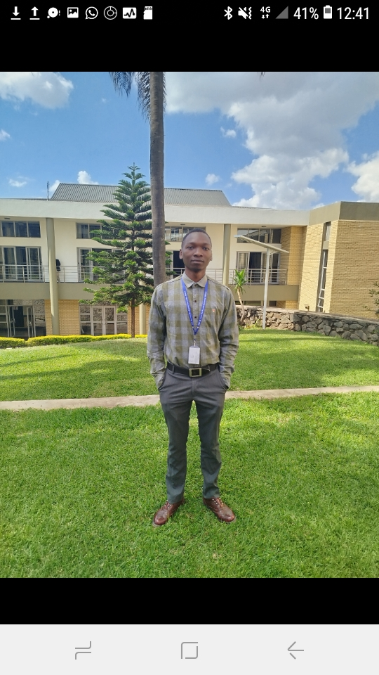

About Me

Introduction
I am a Computer Science student with a strong interest in technology and how software shapes everyday life. I enjoy learning new programming concepts and turning them into working projects. I am also interested in decentralized application (dApp) development.
Educational Background
| Institution | Qualification | Programme | Period |
|---|---|---|---|
| DMI-St. John the Baptist University, Mangochi Campus, Malawi | Bachelor of Science (BSc) | Computer Science | Year 3 of 4 |
Technical and Creative Skills
- HTML and CSS
- JavaScript
- Python programming
- Java programming
- Database management and networking
- Decentralized application (dApp) development
- CorelDRAW
- Adobe Premiere Pro
- Adobe After Effects
- Adobe Photoshop
- Autodesk Fusion 360
- SolidWorks CAD
Internship Experience
- Rydberg Starck Limited — three-month internship in 2025.
- Rydberg Starck Limited — three-month internship in 2026.
Interests and Hobbies
I enjoy swimming and exploring software development, creative media, 3D design, and decentralized applications.
Career Aspirations
I aspire to grow as a decentralized application developer and use technology to build useful solutions.
Contact
- ntatayamiko@gmail.com
- github.com/ntatayamiko
- Mangochi, Malawi